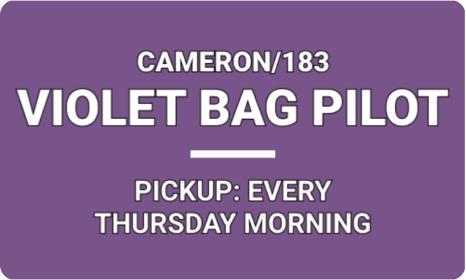

Encampment Violet Bag Pilot
A new service for Austin's homeless
Case Study

Summary
The Office of Design and Delivery (ODD) collaborated with stakeholders and people experiencing homelessness to launch the Encampment Violet Bag Collection. After testing the pilot over a 6-week period, we developed recommendations to expand the scale of the pilot to a citywide program. Currently, the Violet Bag Program is city service that includes violet bag distribution, social services outreach, and weekly garbage collection at encampments.
My role: user research, service design, visual design
Deliverables: research synthesis, sign and information card mockups, findings presentation
Tools: Figma
Challenge
How might we provide tangible health and safety benefits for people experiencing homelessness, who reside in encampments, and reduce public complaints about trash? Additionally, because each encampment involves a different set of needs and challenges, we needed a solution that was flexible and scalable. It must be adaptable to on-the-ground environments and relatonships.
Solution
The Watershed Protection Department’s (WPD) encampment management pilot tested a model based on the City of Seattle’s Encampment Trash (Purple Bags). This earlier work by the City of Austin demonstrated that people living in encampments, if given the tools and opportunity, will collect and properly dispose of garbage from their encampments. To build on these examples, WPD worked with the Service Design Lab (ODD), Austin Resource Recovery (ARR), Public Works (PWD), Parks and Recreation Department (PARD), the Integral Care PATH team, and 311 to test the pilot, conduct outreach, and collect data at four sites.
Check out media coverage of our pilot!: KVUE ABC, CBS Austin
Research Process
User Research
Pre-pilot interviews: My co-researcher and I conducted pre-pilot interviews with encampment residents to gauge their interest in participating in the pilot.
We hypothesized that individuals experiencing homelessness will be using the violet bags as a means to dispose of trash and that resident complaints about trash in the areas around the encampments will drop.
The pilot sites were initially selected based on the volume of garbage-related complaints located at those sites. As part of the pilot, we wanted to continue using 311 data to gauge our impact and hoped to see complaints decrease in this time frame. ODD and 311 have developed a process to analyze the call notes and look for patterns in the frequence of the terms used in a call.
Pilot interviews: Over six weeks, we visited the various encampment sites to talk to residents about the progress of the pilot, how violet bag drop-off/pick-ups were going, and how we could improve the pilot. In addition, we interviewed Austin Resource Recovery crew members who were responsible for the pick-ups to understand their pain points and get their feedback.


Research Findings and Presentation
We found that encampment residents are very enthusiastic about keeping their spaces clean and will use resources given to them. In addition, the violet color identification and branding was crucial to citywide pilot awareness and garnering media and public attention.
"You guys are the reason we can keep our spot clean."
After concluding the pilot, I consolidated our learnings and feedback from individuals experiencing homelessness, the public, and city staff, and presented findings to project stakeholders, including representatives from the City Manager’s Office, Parks and Recreation, Watershed Protection, Austin Resource Recovery, Public Works, Integral Care, and 311.
Prototype and Measurement
Through a two-phased pilot we explored three questions with specific goals and a testing plan:
Our Questions
- What would be the impact of adding garbage collection sites along existing ARR pick-up routes?
- What would be the outcome and efficacy of Violet Bag distribution either through kiosks or outreach workers?
- What would the impact of garbage collection be for people residing at encampment sites and for public perception?
Our Goals
- Learn more about ARR pick-up requirements and coordination efforts along existing routes to reduce burden on ARR truck operators.
- Minimize complaints about encampments and reduce impact on City property by providing trash bags and collection for participating residents.
- Reduce safety risks to homeless individuals living near creeks or in storm drain infrastructure.
- Effectively engage site residents at the piloted sites in Violet Bag collection guidelines and safe disposal practices.
- Effectively increase awareness about the Violet Bag Pilot.
- Address public concerns about garbage.
What We Measured
- Collection: # of bags collected and pounds of trash collected
- ARR experience: Interview truck operator about their experiences as well as pain points, insights, and recommendations. Test cart collection.
- Distribution: Test the efficacy of bag kiosks vs. distribution during outreach
- Engagement: Interview people living at piloted sites and synthesize learnings and recommendation.
- Test harm-reduction engagement at specific sites to improve compliance with sharps containers.
- 311 call patterns: Reduce 311 call complaints about trash, litter, or the homeless, Interview 311 callers.
- Resident feedback: Feedback from neighborhood residents and businesses
What We Changed
After the first phase of the pilot, ARR made some adjustments to the collection schedule and began experimenting with collection containers at some of the sites. The collections at each site have increased to twice a week to help keep bag volumes low. ARR staff is also checking and filling the kiosks at each site. At the new Pleasant Valley site, ARR worked with PARD to install six large carts. The carts can be easily unlocked and emptied and minimize staff’s contact with the bags. ARR is also designing and testing a cage for carts at the TxDOT locations that will provide secure and easy access for the residents and minimize rodent activity.
In the second phase of the pilot ARR and the Service Design Lab considered some options for expanding the project to new sites and wanted to understand the types of locations that could be added. The criteria we identified were the presence of an encampment and a good location for a kiosk. An encampment is a space where one or more person is residing and storing their personal belongings. Some of the frequent calls about encampments and homelessness are actually locations where people may frequently panhandle, or “fly a sign,” and would not be good locations for Violet Bag distribution or collection. The kiosks and collection areas need to be accessible for ARR staff and large enough for a truck to pull up and turn around. We estimated that this is at least 50 feet of flat, preferably paved, area. It also needs to be close to the encampment area but, for their safety, residents can not live within 50 feet of the collection site.
Visual Design
Branding
To effectively communicate the designated violet bag drop-off location and pick-up days, as well as disposal practices, to encampment residents, I designed an accessible, easy-to-understand, and action-oriented sign. The sign was placed on a standing kiosk and was visible to both encampment residents and the public.

In addition, I designed info cards (front: pilot logistics, back: disposal practices) to hand out to encampment residents when conducting outreach and user interviews. Encampment residents would then have important information on-hand, rather than having to walk to the sign to read the pilot guidelines.
I used a distinctive violet color to indicate the violet bag connection and to create a public-facing brand for the pilot, which left a lasting impression on encampment communities, Austin residents, and City staff.
Implementation
In order to preserve human and environmental health and safety, these encampments need access to regular garbage collection. Through the Violet Bag Pilot Program, the City of Austin has developed an adaptive, interdepartmental model that leverages existing resources, collaborates with site residents to meet shared goals, and integrates outreach specialists to ultimately resolve encampments by ending the resident’s homelessness.
Outcomes
Through this pilot, we learned that many different factors may contribute to a site’s success and identified an interdepartmental model that can be scaled to respond to some types of encampment hotspots throughout the city. Recommendations based on the pilot include:
- Maintain the existing violet bag program sites and the collaborative, interdepartmental team that supports it.
- Make infrastructure improvements at all sites by installing carts, modifying the kiosk design, and identifying options to streamline kiosk sourcing.
- Identify sites for possible scaling and expand project collaboration to include other public land managers in Austin.
- Develop partnerships with faith-based and harm reduction organizations for site outreach and kiosk maintenance.
Conclusion
This project was a significant human-centered design learning process. Without extensive user interviews, meeting people where they are and giving people experiencing homelessness an opportunity to voice their concerns and make decisions, the Violet Bag Pilot would not have achieved this level of succcess. This experiencing showed me that people are already being innovative and solving problems with their neighbors, and the City can help by providing them with the right tools.